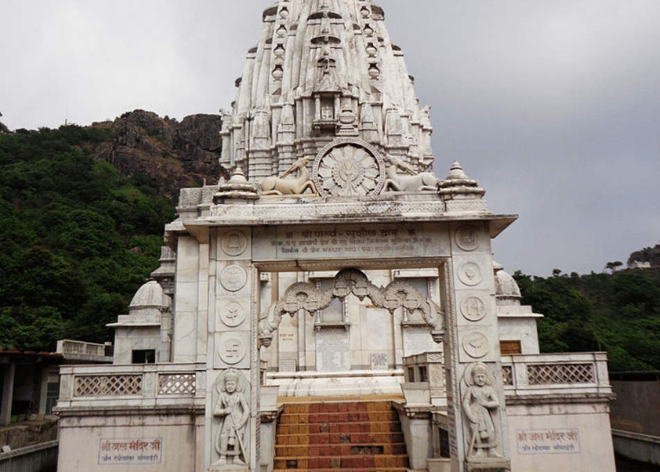

Parasnath Temple

Parasnath Temple
Parasnath Hill (also Sammet Shikhar, Marang Buru) is a mountain peak in the Parasnath hill range. It is located towards the eastern end of the Chota Nagpur Plateau in the Giridih district (Hazaribagh district in British India) of the Indian state of Jharkhand, India.
The hill is named after Parshvanatha, the 23rd Jain Tirthankara who got salvation here.[5] In this connection, there is Jain pilgrimage Shikharji on the top of hill. The hill is also known as Sammet Shikhar (lit. 'great mountain', the supreme deity) by other autochthonous of the region in religious contexts
History
Historically parasnath or sammed shikharji is an ancient Jain pilgrimage site it is a place where the 23rd tirthankara Parshwanath(also known as Parasnath) attained salvation here in 772 BCE.
It is noteworthy that the name of the Parasnath hill derived from the Jain Tirthankar Parshvanath who is also known as Parasnath or Parsva who attained salvation here during the 8th century BCE. After preaching for 70 years, Parshvanath attained moksha at Shikharji on Parasnath hill.Some jain texts name the place as Mount Sammeta.[8] It is revered in Jainism because 20 of its 24 tirthankars are believed to have attained moksha there.
At the age of 100 on Shravana Shukla Saptami according to Lunar Calendar.[12] His moksha (liberation from the cycle of birth and death) in Jain tradition[13] is celebrated as Moksha Saptami. This day is celebrated on large scale at Parasnath tonk of the mountain, in northern Jharkhand, part of the Parasnath Range[14] by offering Nirvana Laddu (Sugar balls) and reciting of Nirvana Kanda. Parshvanatha has been called purisādāṇīya (beloved of the people) by Jains
The Santhal community use the name Marang Buru. They are in dispute with the Jain community as to certain ancestral worship and other rights, and these have been subject to judicial review historically.[2] Recent bans on meat and alcohol, upheld by the Jharkhand High Court in 2025, have exacerbated the conflict, curtailing Santal traditions and fueling protests and counter-petitions in the court.[18] However Jains claim that santhal claim is implausible and illogical and that actually parasnath is a jain pilgrimage since ancient times.
They also believe that Jains and Adivasis have co-existed at Parasnath Hill since ancient times, and that when the tirthankaras sought nirvana there, Adivasis traditionally carried them to the summit, a practice that continues today.
The earliest literary reference to Shikharji(Parasnath) as a tirth (place of pilgrimage) is found in the Jñātṛdhārmakātha, one of the twelve core texts of Jainism compiled in 6th century BCE by chief disciple of Mahavira. Shikharji is also mentioned in the Pārśvanāthacarita, a twelfth-century biography of Pārśva. A 13th century CE palm-leaf manuscript of Kalpa Sūtra and Kalakacaryakatha has an image of a scene of Parshavanatha's nirvana at Shikharji.[19] This all indicates Parasnath was a jain site since ancient times. Also many historians accept parasnath as the place of Moksh kalyanak(during 772 BCE) of the historical figure Tirthankar Parshvanath
Geography
Parasnath Hill and other locations in the Giridih district in North Chotanagpur Division. Key:
M: municipality, C: census town, R: rural/ urban centre, H: historical/ religious/ tourist centre
Clck or prolonged tap on icons for detail. Owing to space constraints, the locations on click through to the larger map may vary slightly.
At 1,365 m (4,478 ft) Parasnath is the highest mountain peak in the state of Jharkhand, and is theoretically inter-visible (by direct line of sight on a perfectly clear day) with Mount Everest over 450 km (280 mi) away.[23]
There is a beautiful Jain temple on the mountain peak known as "Svarna Bhadra koot " ("cottage of golden grace").[24] The temple is made of marble.There is another marble jain temple on hill known as Jal Mandir.
it is easily accessible from Parasnath railway station.
Religious heritagebr
Jainism
This is one of the most holy and revered sites for the Jain community. They call it Sammed Sikhar. It is a major pilgrimage site. Out of 24 Tirthankaras of Jains, 20 got nirvana on Parshvnatha Hills.
On the mountain, there are the Shikharji Jain temples, an important tirthakshetra or Jain pilgrimage site.[25] For each Tirthankara there is a shrine (gumti or Tonk) on the hill.[26]
The Jain temple is believed to be constructed either by the Magadha King Bimbisara or by the Kalinga King Avakinnayo Karakandu.br>
An ancient idol of Lord Parasnath is located in the valley at Palganj. The idol is believed to be 2500 years old.[27]
During 772 BCE at the age of 100 on Shravana Shukla Saptami according to Lunar Calendar.[12] Tirthankar Parswanath moksha (liberation from the cycle of birth and death) in Jaina tradition[13] is celebrated as Moksha Saptami. This day is celebrated on large scale at Parasnath tonk of the mountain, in northern Jharkhand, part of the Parasnath Range[14] by offering Nirvana Laddu (Sugar balls) and reciting of Nirvana Kanda.